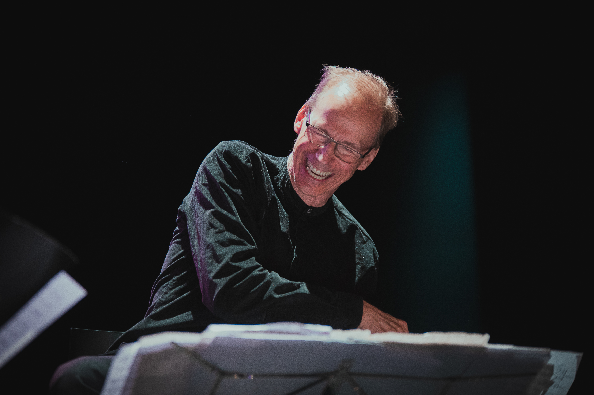
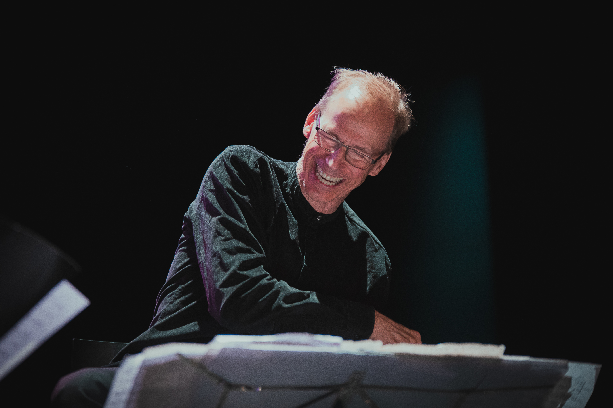
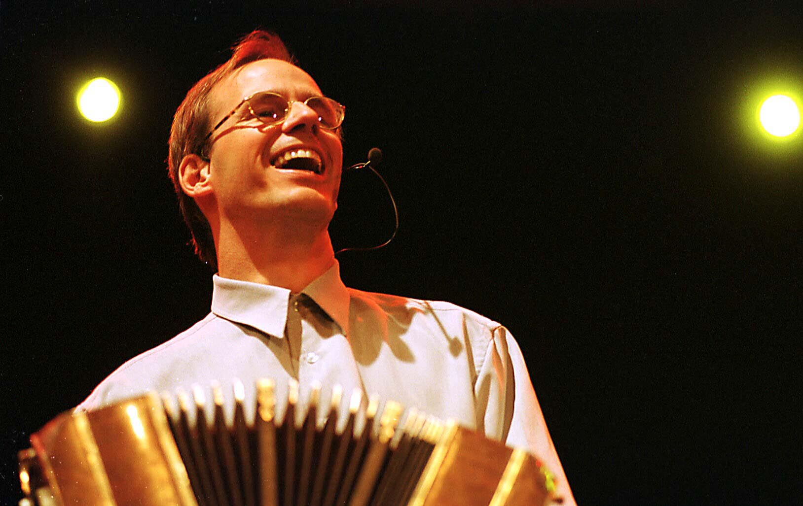
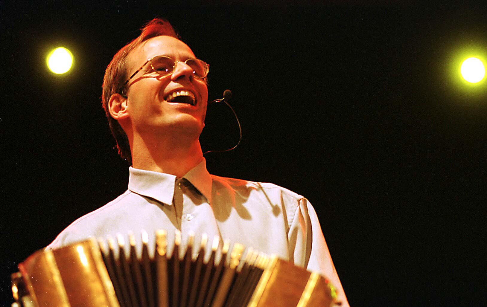

 

Performances
2019-22
For 2019-21 Per Arne is composing/premiering several new compositions:
DOUBLE-CONCERTO for viola, bandoneon and chamberorchestra commissioned by Eivind Ringstad Holtsmark and the Norwegian Chamberorchestra (premiere autumn 2021).
PIECE FOR TWO BANDONEONS and sinfonietta commissioned by the Artic Sinfonietta (premiere 2021 tbc)
CANCIONES DE COBRE ; A new piece for Ny Norsk Brass-Quintet and bandoneon with lyrics/reading by Kjartan Fløgstad
(at the Lillehammer Litterature-festival May 29th 2020).
Le Grand Tango feat.POLACO, a new quintetpiece premiere jan 12th 2020 at the Opera in Oslo.
TANGOFO for bandoneon and orchestra commissioned by the Oslo Philharmonic Orchestra (premiere jan 8th 2019) .
Performances as a musician:
February 2020:
16: Bandoneon SOLO Halberstadt 18.00
15: Bandoneon SOLO Evangelisch Kirche Falkensee (Berlin) 16.00
http://www.kirche-heilig-geist.de/
14: Bandoneon SOLO/Duo Lisandro Baum 21.00
La Cita: Adresse: 1ter Rue Deguerry PARIS 75011
Métro: Goncourt, Parmentier
9: BOZAR, Bruxelles 15.00 Glorvigen-Tri
November 2019:
29-30: Avignon conservatory concert with own works and conference
October 2019:
6: Gütersloh Theater Glorvigen-Trio
1-2: Dortmund Philharmonic:Bernd Franke: Open Doors
September 2019:
20 Champagne Jean-Christophe Leclère
July 2019:
12-14 Lofoten Internasjonale Kammermusikkfest:
Violent Tenderness
6: Glorvigen Trio, Hauzenberg
June 2019:
8-10 Riga Kremerata Baltica/Kremer: Tango Funèbre+Piazzolla.
May 2019:
8 Resonans Gjøvik
3 Ibsenhuset Skien Norsjø Kammermusikkfestival:
Violent Tenderness, Scènes de Bistro+ Piazzolla
March 2019
29 Berlin Philharmonie “El Arte de la Fuga y del Tango” Glorvigen-Trio
https://www.berliner-philharmoniker.de/en/concerts/calendar/details/52459/
23 Lausanne, Switzerland l’Eglise Saint-François with Jean-Christophe Leclère, harpsichord/organ
19 Halvorsen Musikkfest Strømsø Kirke, Drammen “El Arte de la Fuga y del Tango” Glorvigen Trio.
www.johanhalvorsen.no
1-3 Tangofestival Komische Oper, Berlin with Glorvigen Trio, Gidon Kremer & Kremerata Baltica (2.march)
https://www.komische-oper-berlin.de/entdecken/tango-festival/
January 2019
8-11 Oslo Philharmonic New Years Concerts World Premiere “Tangofo”
2018
December 2018
28-29 Dovrejul festival. Two World Premieres: B.K.Odde “Slåttånd” and O.Hjellemo “Symphony nr.4”
With The Trondheim Soloists, Bjørn S.Glorvigen, Paul Wilmot… www.dovrejul.no
November 2018
14 “El Arte de la Fuga y del Tango” Hamm (Dortmund) Glorvigen Trio
2 “El Arte de la Fuga y del Tango” Ratingen (Düsseldorf) Glorvigen Trio.
October 2018
27 Tango con Amigos 2 Stavanger Konserthus Fartein Valen.
23 Fryd Scene, Ål Trio Jensen/Haugerud/Glorvigen
3-7 Elbland Philharmonie Franke”Open Doors”, Piazzolla “Aconcagua”.
September 2018
29 Bautzen “Glorvigen Trio” “El Arte de la Fuga y del Tango”
3-21 KSS Schooltour Norway.
August 2018
18 Switzerland with Jean-Christophe Leclère, organ/harpsichord.
7-12 ICMF Stavanger Chambermusicfestival. World Premiere “Shantid” for harp (Marie-Pierre Langlamet) and Glorvigen Trio. Violent Tenderness with Maxwell Quartet. Kagel: Pandoras Box. “El Arte de la Fuga y del Tango” (Glorvigen Trio).
July 2018
23 Voss Festival NordAccordion “Glorvigen Trio” “El Arte de la Fuga y del Tango”
June 2018
16 Bachfest Leipzig “Glorvigen Trio” “El Arte de la Fuga y del Tango”.
4-9 Recording own works for cello and bandoneon. Andreas Brantelid/Norwegian Chamber Orchestra.(Simax).
May 2018
18-20 Festival “Lille Norge” Radialsystem V,Berlin. www.lillenorge.de Glorvigen: “Dos Noruegos en Buenos Aires” Norwegian Chamber Orchestra/Ø.Gimse May 19 22.30. Kagel: Pandoras Box May 20 12.00 Glorvigen: Violent Tenderness May 20 14.00 (string quartet led by Bjarne Magnus Jensen).
April
10 Rouen Ensemble Variances/Thierry Pécou (Pecou/Glorvigen/Piazzolla)
March
25 Festival “Musik in Sandstein” Kirche in Berggießhübel “El Arte de la Fuga y del Tango”, Glorvigen Trio
24 Thüringer Bachwochen Wartburg (Eisenach) “El Arte de la Fuga y del Tango”, Glorvigen Trio
7-20 KSS Schooltour Norway
February
24: Hemsingfestival, Valdres Norway.
9-15 : Piazzollas bandoneonconcerto with Orchestre Nationale d’Ile de France/C.Arming
Friday 9 : 20.30 Théâtre Espace Coluche, Plaisir
Sunday 11 : 15.30 Centre Jacques Prévert, Villeparisis
Tuesday 13: 20.00 Salle Gaveau, Paris
Wednesday 14: 20.30 Seine Musicale, Boulogne-Billancourt
Thursday 15 : 20.30 Centre Culturel Les 3 Pierrots, Saint-Cloud
January 24-28 Glogerfestspillene Kongsberg, Norway
2017
November 3: Grieghallen Bergen “Tango con amigos”
http://www.grieghallen.no/display.aspx?menuid=-99&pageId=13&prodid=1008
October 15: Musikkens Venner Åsnes trio Haugerud/Jensen
October 14: Hamar Kulturhus Tango for 3
September 16 Maihaugsalen, Lillehammer “Tango con amigos”
https://maihaugsalen.no/Program/Per-Arne-Glorvigen-Tango-con-amigos
August 31-sept 3 Purbeck Festial, UK
August 5th Glorvigen-Trio Nordhausen
July 30th Glorvigen-Trio Ringebu Stavkyrkje Norway
July 23d Glorvigen-Trio Budsjord Dovre Norway
July 22nd 12.00 Glorvigen-Trio Drøbak Kirke Norway
July 3d Glorvigen-Trio Feldkirch (Austria)
June 23d Maria de Buenos Aires Dresden
June 15th Glorvigen-Trio Lenzburg (Switzerland)
May 30th-june 2nd Festival Det Vilde Ord Bodø, Norway “Fjellkjelda” for choir and Tangotrio. With S.Haugerud, B.M.Jensen, Guri S.Botheim and Vokal Art
March 15th Glorvigen-Trio Remscheid
http://www.remscheid-live.de/?193067
February 22 and 24th Venice with J.C.Leclere, haprsichord/organ
February 10th: Luzern with Apollon Musagète String Quartet.
http://www.kammermusik-luzern.ch/feierabendprogramm
January 22 Oslo Opera: Tango con Amigos Sold out
http://operaen.no/Forestillinger/per-arne-glorvigen-tango-con-amigos/
January 15th Arve Tellefsen anniversary concert Oslo Opera Sold out
2016
September 14th 2016 PA.Glorvigen Trio “Kreuzgang am Kaiserdom” Königslutter http://www.koenigslutter-kaiserdom.de/default.asp?LNG=DE&NAV=76
August 16-20 Stavanger International Chamber Music Festival www.icmf.no
August 14th Høgfjellskonserten “Ved Rondane” Det Norske Solistkor, Charlie Siem, Steinar Haugerud incl. WP on “Fjellkjelda” PA.Glorvigens new composition on texts by Guri Sørumgård Botheim and Anna Kleiva for choir, violin, double-bass and bandoneon. http://peergynt.no/presse/artikler/item/hogfjellskonserten-vedrondane
July 24-30 teaching at Bloomington summer course
http://music.indiana.edu/precollege/adult/tanguero-camp/index.shtml
June 15-20 Kirsten Flagstadfestival Hamar http://www.flagstad-festival.no
May 11 Bodenseefestival Ravensburg PA.Glorvigen Trio http://bodenseefestival.de/2016/05/per-arne-glorvigen-trio/
April 21st Fagerborgfestspillene festival Oslo PA.Glorvigen: Dos Noruegos en Buenos Aires w.Joon-Ho Shim, cello PA.Glorvigen, Bandoneon and
Barrat-Due Institute Orchestra http://www.barrattdue.no/nor/fagerborgfestspillene/
March: Tour w.Telemark BrassQuintet World-Premiere of Per Arnes new piece for brass-quintet and bandoneon
including Ottar Kaasa, Hardingfiddle and tangodancers Pablo Inza/Sofia Saborido+FRIKAR Dates:
2.3 19.30 Vinje 3.3. 19.30 Seljord 4.3. 19.30 Bø 5.3. 21.00 Riksscenen Oslo 6.3 19.30 Skien
Feb 17-19. Hemsingfestival, Valdres www.hemsingfestival.com
Feb 1-5 Trondheim Barokk-Festival m.Tormod Dalen, barock-cello http://www.trondheimbarokk.no
2015
Dec. Composing of the new commission for (Telemark) brass-quintet and bandoneon. Stay in Argentina.
Nov 14 21.30 Frantziskanerkloster Kempen (Mönchengladbach) PA.Glorvigen Trio
Sept 11-16 KKKK Festival Krisitansund WP Stabat Mater by Per Arne Glorvigen for choir, strings, soprano, percussion and bandoneon.
Aug 29 Musikfest Bremen Apollon Musagète Quartet
Aug 26 Chopin Festival Warsaw Apollon Musagète Quartet
Aug 21 Hohenlohe Solo Recital
Aug 17-19 Oslo Chamber Music Festival PA.Glorvigen Trio
Aug 15 PA.Glorvigen Trio Wismar
Aug 7th MDR Musiksommer Stolpen (Dresden)
July 20th Hauzenberg Apollon Musagète Quartet
July 4th Sächsische Staatskapelle/Vladimir Jurovski Dresden
June 8th Bergen Festival PAG Trio
May 17th Sclosss Corvey Delian Quartett
March 20.Komische Oper Berlin Maria de Buenos Aires March 21,Komische Oper Berlin Orquesta Tipica de Tango March 22. Komische Oper Berlin Maria de Buenos Aires
March 13th Larvik Maria de Buenos Aires feat.Julia Zenko March 14th Lillehammer Maria de Buenos Aires March 15 National Opera Oslo Maria de Buenos Aires
Jan 30th Beethoven-Haus Bonn PA.Glorvigen Trio
Jan 11.th Hof Kirke Åsnes Norway
2014
Dec 28th DOVREJUL MUSIC FESTIVAL 1.Year! Per Arne and brother Bjørn Sigurd with a new intimate festival in hometown Dovre, Norway.
DEC 4th.2014 MDR-Sinfonieorchester Leipzig dir.Kristian Järvi Taneli Turunen cello/vocals, PA.Glorvigen Bandoneon. Tüür, Grieg, Glorvigen: Dos Noruegos en Buenos Aires, doubleconcerto for cello, bandoneon and strings.